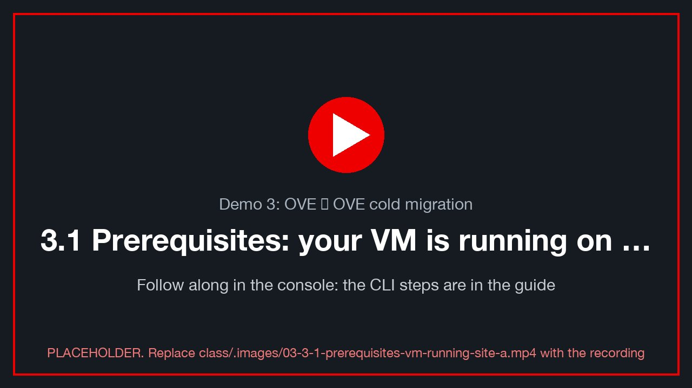
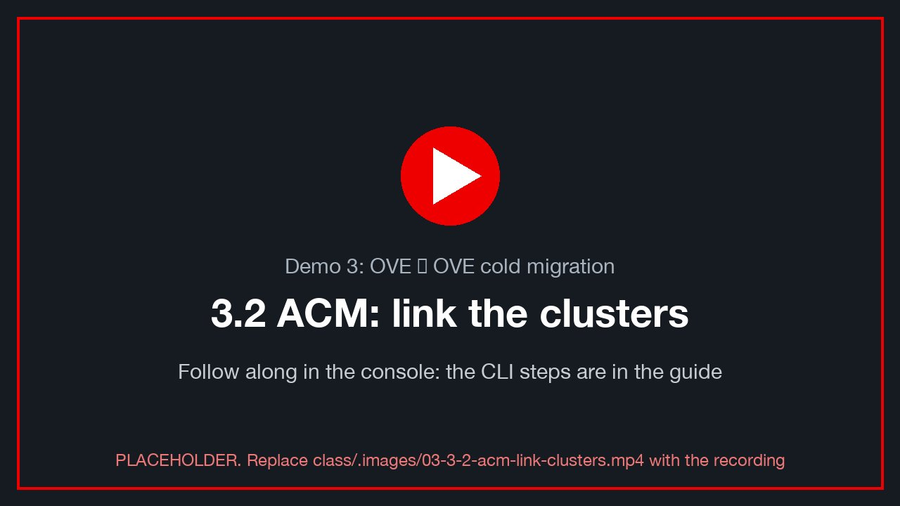
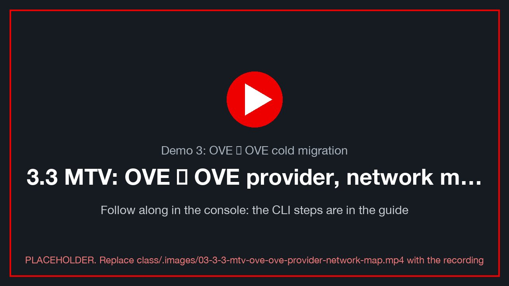
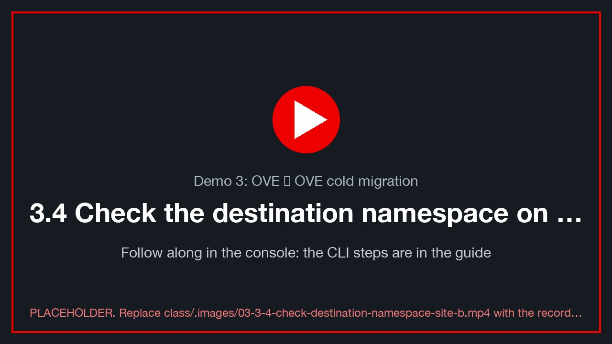
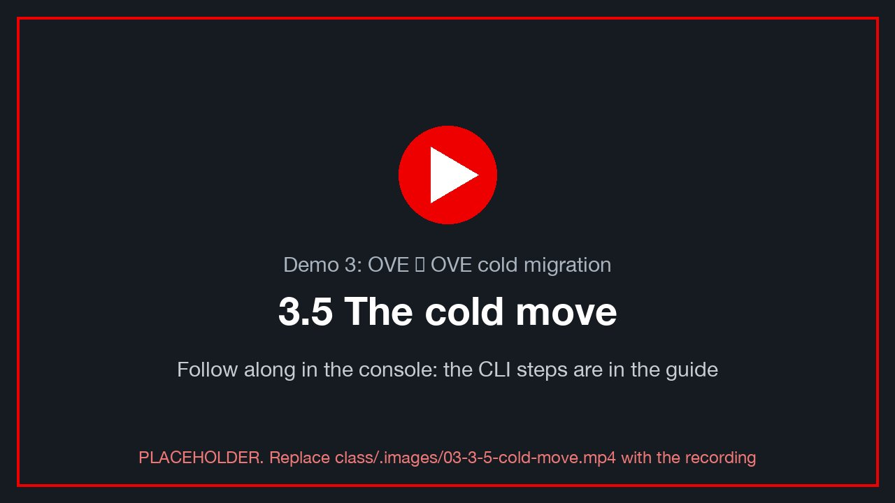
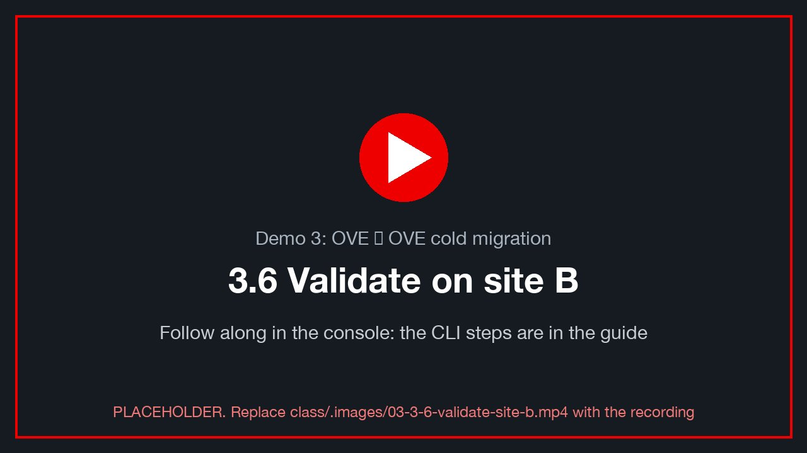
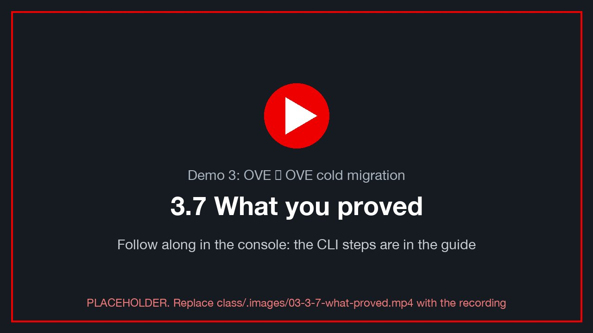

Demo 3: OVE → OVE cold migration¶
Version 0.4.0 · draft · 2026-10-12 · class/demos/03-ove-to-ove-cold.md
What you will learn¶
In this demo you move your VM between two OpenShift clusters: from site A to site B. You will see how Advanced
Cluster Management (ACM) links the clusters into one fleet, and how MTV uses an openshift provider, a network map
and a storage map to move a VM between them. Because the two sites can use different storage, the move is also a
storage migration: the disks are copied from one storage platform to another. As in every demo, you will
inject your own rows before the move and prove after it that every one arrived intact.
How the lab is set up for this demo¶
The class CI customization (the customize run that core-web starts after the three environments are built)
prepares everything below before you log in. See the lab diagram for how the clusters connect,
and Lab S — how this lab was built for the CLI and console steps behind each row.
| Pre-built for you | Where | How it was built · Red Hat docs |
|---|---|---|
OpenShift Virtualization (ove: cnv) |
both clusters (the same operators on both) | S.2 · OpenShift Virtualization 4.19 |
| ACM (and cert-manager) | both clusters (base demo-openshift build). The lab imports site A into site B's hub only when site A is not a hub itself; with ACM on both, each cluster is its own hub today, so 3.2 shows both views [verify: BL-D11, the ACM topology decision] |
S.10 · ACM 2.13: importing clusters [verify link] |
NMState bridges + VLAN NADs (vmnet<VLAN>) |
both clusters | same-named NADs on both sites, so VLAN networks map across. S.3 |
| Storage | site A ODF (ocs-storagecluster-ceph-rbd-virtualization), site B NFS (nfs-csi): one ODF site today (SSD limit), so this move is ODF → NFS |
S.4 · ODF 4.19 |
| MTV on both tooled sites, with its console menu | site B (needs migration_tools=both) |
provider ovedr-ocp-<A-slot> (type openshift, reads site A over api-int with site A's CA), plus its network map and storage map, Ready. S.5 · S.7 · S.8 · MTV 2.11 |
Your namespace $VMNS (your class ID, you are admin) with your Service/<VM>-sql and your browser terminal sql-client |
both clusters | your VM lands in your namespace on each site; you may create and run your own plans. S.9 |
| Student read access | both clusters | MTV objects in openshift-mtv, managed clusters on the hub, bridges, storage classes. S.9 |
Your own VM, win-pg-s<NN> |
running on site A | the end state of Demo 1 (staged plan d1-<VM>), still at its own address $VM_IP on the VLAN bridge. S.11 · S.12 |
State at the start of this demo: your VM is running on site A in your namespace ($VMNS), and site B has no copy of it
yet.
What you do yourself: review ACM and the MTV objects, stop your VM, build and start your plan on site B (this one is not staged: you build it, then the last step is to start it), and verify. Your VM keeps its own address on site B too, so Lab 0 §0.6 is not needed.
Before you start: complete Lab 0 in this terminal. You need
$ME,$A,$B,$VM, both contexts (site-a,site-b) and the helpers (sql,mark,verify,alive,where).🖥️ Where you type the commands: your browser terminal. Every
bashblock in this guide runs in your own terminal pod, in the browser: in the site A console, project<your class ID>→ Workloads → Pods →sql-client→ Terminal (Lab 0 §0.3). Nothing is installed on your computer. It already knows your VM and its address (typeovedr);dbloginandocloginfrom Lab 0 stay signed in while the pod runs. Variables youexportlast until you close that Terminal tab: if you reopen it, re-run the guide'sexportlines. Paste with right-click → Paste (or Ctrl+Shift+V / ⌘V).powershellblocks run inside your Windows VM, from its console (vCenter Launch Web Console, or the VM's Console tab in OpenShift).
3.1 Prerequisites: your VM is running on site A¶
class/.images/03-3-1-prerequisites-vm-running-site-a.mp4).
This demo starts where Demo 1 ended: $VM is running on site A in your namespace $VMNS. (Haven't run Demo 1?
Start your staged plan d1-<VM> on site A first: Demo 1 §1.5.)
where # site-a Running node=… / site-b -
oc --context site-a -n "$VMNS" get vm,vmi "$VM"
oc --context site-a -n "$VMNS" get pvc | grep "$VM"
Your VM's address on site A¶
The staged plan put your VM on the VLAN bridge, so it still answers at its own $VM_IP. (Only if you moved it
with the pod map in Demo 1 and followed Lab 0 §0.6: keep that PGHOST.)
echo "PGHOST=${PGHOST:-$VM_IP}"
alive # staleness < 10 s
verify # chain_ok = t, carried over from demos 1/2
Inject: before the move¶
mark d3-before "on $A, about to move to $B"
verify # ✍️ note marks, last id, fingerprint
In your VM (site A console: Virtualization → VirtualMachines → <VM> → Console, log in as .\<WINUSER>), add a
line to your file:
Add-Content "C:\Users\Public\ovedr\$env:USERNAME.txt" "$(Get-Date -Format o) d3-before on site A"
Get-Content "C:\Users\Public\ovedr\$env:USERNAME.txt"
✍️ Proof table, row 3.0: last mark id, chain_ok, fingerprint.
📸 03-before-site-a — the site A console showing <VM> Running, with PowerShell showing your file.
3.2 ACM: link the clusters¶
class/.images/03-3-2-acm-link-clusters.mp4).
ACM is installed on both clusters by the base demo-openshift build, so each cluster is a hub for itself
(local-cluster). The class's intended topology is site B's hub managing site A. The lab's demo-prep step
imports site A only when site A is not a hub itself, so on a booking where both are hubs the instructor decides
whether to import (below) or to show each hub's own view [verify: BL-D11]. How it was built:
Lab S §S.10. Red Hat: ACM 2.13 clusters [verify link].
Review the hub and its managed clusters¶
oc --context site-b get multiclusterhub -A # Phase: Running
oc --context site-b get managedclusters # $A … JOINED=True AVAILABLE=True
oc --context site-b get managedclustersets
oc --context site-b get managedcluster "$A" \
-o jsonpath='{range .status.conditions[*]}{.type}={.status} {.reason}{"\n"}{end}'
On site A, the klusterlet is the agent that reports to the hub:
oc --context site-a get klusterlet # [verify: student read on klusterlets]
oc --context site-a -n open-cluster-management-agent get pods # klusterlet, work-agent: Running
✅ $A is JOINED=True and AVAILABLE=True on the hub.
📸 03-acm-clusters — site B console, All Clusters → Infrastructure → Clusters, with $A Ready.
🧑🏫 Instructor only: if site A is not imported yet¶
CI imports site A into site B's hub when site A is not itself a hub (the demo-prep readiness table says which).
If it didn't, the instructor imports it once for the whole class [verify: BL-D11, importing a cluster that runs
its own hub].
Console (site B, All Clusters perspective): Infrastructure → Clusters → Import cluster.
- Name: <A> (for example ocp-lz1)
- Cluster set: default
- Import mode: Enter your server URL and API token for the existing cluster
- Server URL: https://api-int.<A>.demo.lab-paragonmicro.com:6443, with an API token from site A (see below)
CLI equivalent [verify]: create the ManagedCluster on the hub, then give the hub an auto-import-secret holding
a site A token. The import controller deploys the klusterlet onto site A for you.
# a short-lived token for an account that is cluster-admin on site A (the instructor's)
SITE_A_TOKEN=$(oc --context site-a whoami -t)
oc --context site-b apply -f - <<EOF
apiVersion: cluster.open-cluster-management.io/v1
kind: ManagedCluster
metadata:
name: $A
labels: { cloud: auto-detect, vendor: auto-detect, cluster.open-cluster-management.io/clusterset: default }
spec:
hubAcceptsClient: true
EOF
oc --context site-b -n "$A" create secret generic auto-import-secret \
--from-literal=autoImportRetry=5 \
--from-literal=server="https://api-int.$A.$DOMAIN:6443" \
--from-literal=token="$SITE_A_TOKEN"
unset SITE_A_TOKEN
oc --context site-b get managedcluster "$A" -w # JOINED → True, AVAILABLE → True (Ctrl-C)
⚠️ A
whoami -ttoken belongs to whoever runs it. Only the instructor (cluster-admin on site A) can import. Students only review.
Your VM, seen from the hub¶
Console (site B, All Clusters): Infrastructure → Virtual machines (fleet virtualization), or Search
with kind:VirtualMachine name:<VM> [verify: ACM 2.13 fleet virtualization view enabled on the hub].
✅ <VM> shows on cluster $A, namespace <your class ID>, status Running; each classmate's VM shows in their own namespace.
📸 03-acm-vm-view — the hub's virtual machines view, showing the class's VMs on $A.
💡 What ACM gives you here: one place to see both clusters and their VMs, and the trust (managed cluster + klusterlet) that the later DR demo builds on. MTV still does the move. ACM shows you where the VM is; MTV moves it.
3.3 MTV: OVE → OVE provider, network map, storage map¶
class/.images/03-3-3-mtv-ove-ove-provider-network-map.mp4).
The lab's migration fabric already built the OVE → OVE side on each tooled site. On the destination (site B), the objects are:
Object (namespace openshift-mtv, site B) |
What it is |
|---|---|
Provider ovedr-ocp-<A-slot> (for example ovedr-ocp-lz1) |
type openshift. It reads site A through api-int, verified by site A's internal CA, logged in as the service account ovedr-mtv-peer on site A |
Provider host |
type openshift: site B itself, the destination |
NetworkMap ovedr-ocp-<A-slot>-net |
pod network → pod network, plus every VLAN NAD that exists on both sites with the same name → the same NAD (multus bridge) |
StorageMap ovedr-ocp-<A-slot>-storage |
site A's storage class → site B's storage class |
export A_SLOT=${A#ocp-} # ocp-lz1 → lz1
export PPROV=ovedr-ocp-$A_SLOT
oc --context site-b -n openshift-mtv get providers
oc --context site-b -n openshift-mtv get provider "$PPROV" \
-o jsonpath='{.spec.type} {.spec.url}{"\n"}{range .status.conditions[*]}{.type}={.status} {.message}{"\n"}{end}'
✅ type=openshift, url=https://api-int.<A>.demo.lab-paragonmicro.com:6443, and Ready=True,
ConnectionTestSucceeded=True, InventoryCreated=True.
💡 Why
api-intand notapi?api.<cluster>serves the public Let's Encrypt certificate.api-intkeeps the cluster's internal CA, the one in the provider's secret. A URL and a CA that don't belong together fail withx509: certificate signed by unknown authority. The lab hit exactly that, and fixed it by taking both from the same kubeconfig.
Inventory: what site B can see on site A¶
Console (site B): Migration for Virtualization → Providers → ovedr-ocp-<A-slot> → Virtual Machines.
📸 03-mtv-provider-inventory — the provider's VM list, with the class's VMs, each in its student's namespace.
The maps¶
oc --context site-b -n openshift-mtv get networkmap "$PPROV-net" \
-o jsonpath='{range .spec.map[*]}{.source}{" → "}{.destination}{"\n"}{end}'
oc --context site-b -n openshift-mtv get storagemap "$PPROV-storage" \
-o jsonpath='{range .spec.map[*]}{.source.name}{" → "}{.destination.storageClass}{"\n"}{end}'
# the two storage classes, side by side
oc --context site-a -n "$VMNS" get pvc -o custom-columns=PVC:.metadata.name,CLASS:.spec.storageClassName,SIZE:.status.capacity.storage | grep -E "PVC|$VM"
oc --context site-b get storageclass
✍️ Row 3.1: the source class (site A) and the destination class (site B), from the storage map.
| Booking | Site A class | Site B class | What the copy does |
|---|---|---|---|
| ODF on site A (option A) | ocs-storagecluster-ceph-rbd-virtualization |
nfs-csi |
Ceph RBD block → NFS file-backed image: a real storage-platform change |
| (a booking without ODF) | nfs-csi |
nfs-csi |
same class, different cluster: a copy over the network |
💡 How the disks travel. MTV doesn't move the PVCs themselves. For each disk, it creates a DataVolume on site B in the destination class, and CDI (Containerized Data Importer) fills it by reading the source disk on site A over the network. The source PVCs on site A are left untouched. That is what makes a rollback possible (3.6).
📸 03-mtv-maps — site B console, Migration for Virtualization → Network maps / Storage maps, showing the ovedr-ocp-<A-slot> maps.
3.4 Check the destination namespace on site B¶
class/.images/03-3-4-check-destination-namespace-site-b.mp4).
Your VM lands in your own namespace ($VMNS) on site B. CI built the same things there as on site A: your
namespace with you as admin, your Service <VM>-sql in it (it selects your VM by name), and your site-B browser terminal sql-client (Lab S §S.9).
oc --context site-b get ns "$VMNS" # your namespace, on site B too
oc --context site-b -n "$VMNS" get deploy/sql-client # your browser terminal on site B
oc --context site-b -n "$VMNS" get svc "$VM-sql" -o jsonpath='{.spec.selector}{"\n"}' # vm.kubevirt.io/name=<VM>
oc --context site-b -n "$VMNS" get vm "$VM" 2>/dev/null || echo "no $VM on site B yet" # expected
✅ Your namespace exists on site B, with your sql-client ready, <VM>-sql waiting, and no copy of your VM yet.
3.5 The cold move¶
class/.images/03-3-5-cold-move.mp4).
Stop your VM on site A¶
A cold migration copies stopped disks. Stop your VM cleanly first. Windows shuts down and PostgreSQL flushes.
mark d3-last-before-stop "final row on $A" # your last row on site A
virtctl --context site-a -n "$VMNS" stop "$VM" 2>/dev/null \
|| oc --context site-a -n "$VMNS" patch vm "$VM" --type merge -p '{"spec":{"runStrategy":"Halted"}}'
oc --context site-a -n "$VMNS" get vm "$VM" -w # STATUS → Stopped (Ctrl-C)
export STOPPED_AT=$(date -u +%Y-%m-%dT%H:%M:%SZ); echo "stopped at $STOPPED_AT"
(Console, site A: Virtualization → VirtualMachines → <VM> → Actions → Stop.)
✍️ Row 3.2: the time your VM stopped ($STOPPED_AT). The outage starts here.
Create your plan on site B¶
Each student builds a plan for their own VM (students may create and run plans in openshift-mtv:
Lab S §S.9). How the provider and maps it uses were built: §S.7 and §S.8. Red Hat:
Migrating from an OpenShift Virtualization source [verify link].
Console (site B): Migration for Virtualization → Migration plans → Create plan.
| Field | Value |
|---|---|
| Plan name | d3-<VM> |
| Source provider | ovedr-ocp-<A-slot> |
| VMs | your <VM> (namespace <your class ID>) |
| Target provider | host |
| Target namespace | your namespace (<your class ID>) |
| Network map | ovedr-ocp-<A-slot>-net |
| Storage map | ovedr-ocp-<A-slot>-storage |
| Migration type | Cold |
CLI equivalent:
export PLAN="d3-$VM"
oc --context site-b apply -f - <<EOF
apiVersion: forklift.konveyor.io/v1beta1
kind: Plan
metadata: { name: $PLAN, namespace: openshift-mtv }
spec:
warm: false
targetNamespace: $VMNS
provider:
source: { name: $PPROV, namespace: openshift-mtv }
destination: { name: host, namespace: openshift-mtv }
map:
network: { name: $PPROV-net, namespace: openshift-mtv }
storage: { name: $PPROV-storage, namespace: openshift-mtv }
vms:
- { name: $VM, namespace: $VMNS }
EOF
oc --context site-b -n openshift-mtv get plan "$PLAN" \
-o jsonpath='{range .status.conditions[*]}{.type}={.status} {.message}{"\n"}{end}' # Ready=True
⚠️ If the plan reports a critical condition, read it before you start. The usual causes are a NAD on site A with no same-named NAD on site B (unmapped network) or a storage class that is not in the map.
Start it¶
Your task, the last step. Console: Start on the plan. CLI:
oc --context site-b apply -f - <<EOF
apiVersion: forklift.konveyor.io/v1beta1
kind: Migration
metadata: { name: $PLAN-run1, namespace: openshift-mtv }
spec: { plan: { name: $PLAN, namespace: openshift-mtv } }
EOF
Check: watch it travel¶
oc --context site-b -n openshift-mtv get migration "$PLAN-run1" -w # Running → Succeeded (Ctrl-C)
oc --context site-b -n openshift-mtv get plan "$PLAN" \
-o jsonpath='{range .status.migration.vms[*].pipeline[*]}{.name}={.phase} {.progress.completed}/{.progress.total}{"\n"}{end}'
oc --context site-b -n "$VMNS" get dv,pvc | grep -E "NAME|$VM" # your disks importing into site B's class
oc --context site-b -n "$VMNS" get pods -l app=containerized-data-importer # importer pods while copying [verify: label]
📸 03-mtv-progress — your plan's VM pipeline in the site B console, mid-copy (DiskTransfer progressing).
✅ Three DataVolumes on site B for your VM (the C:, L: and D: disks), each Succeeded, in site B's storage
class.
✅ The migration reaches Succeeded, and <VM> is created on site B and starts.
✍️ Row 3.3: total disk size copied (sum of your PVC sizes), migration start → end time.
oc --context site-b -n "$VMNS" get pvc \
-o custom-columns=PVC:.metadata.name,CLASS:.spec.storageClassName,SIZE:.status.capacity.storage | grep -E "PVC|$VM"
3.6 Validate on site B¶
class/.images/03-3-6-validate-site-b.mp4).
Where is your VM now?¶
where # site-a - (stopped) / site-b Running node=…
oc --context site-b -n "$VMNS" get vm,vmi "$VM"
Your VM's address on site B¶
The OVE → OVE network map sends each VLAN NAD on site A to the same-named NAD on site B, so your VM's NIC stays on
your VLAN's bridge with the same static address $VM_IP. (Only a VM that was on the pod network gets a new pod IP
on site B: then re-read it as in Lab 0 §0.6, step 5, with CTX=site-b.)
CTX=site-b
echo "PGHOST=${PGHOST:-$VM_IP}"
pg_isready -h "${PGHOST:-$VM_IP}" -p 5432
Read and verify: your data¶
Run the helpers against site B now:
alive # beats resume; postgres_started = the boot on site B
verify # chain_ok = t, marks = row 3.0 + 2 (d3-before, d3-last-before-stop)
sql -c "SELECT id, ts, stage, left(sha,12) FROM marks WHERE student = '$ME' ORDER BY id DESC LIMIT 5;"
✅ d3-before and d3-last-before-stop are both there, and chain_ok = t.
✅ The fingerprint from ovedr_checksum matches the one you wrote down. Your VM is yours alone, so no one else's
marks are in its database.
The outage, measured by the heartbeat¶
sql -c "SELECT id, ts, date_trunc('second', gap) AS gap
FROM (SELECT id, ts, ts - lag(ts) OVER (ORDER BY id) AS gap FROM heartbeat) g
WHERE gap > interval '10 seconds' AND ts > timestamptz '$STOPPED_AT' - interval '1 minute'
ORDER BY id;"
✍️ Row 3.4: the gap that ends after $STOPPED_AT. That is the Demo 3 outage: stop on A → boot on B.
Inject: after the move¶
mark d3-after "running on $B, storage $(oc --context site-b -n "$VMNS" get pvc -o json | jq -r --arg vm "$VM" '[.items[] | select(.metadata.name | contains($vm)) | .spec.storageClassName][0]')"
verify
Your file, on the new cluster¶
Site B console: Virtualization → VirtualMachines → <VM> → Console, log in as .\<WINUSER>:
Add-Content "C:\Users\Public\ovedr\$env:USERNAME.txt" "$(Get-Date -Format o) d3-after on site B"
Get-Content "C:\Users\Public\ovedr\$env:USERNAME.txt" # lab0 … d3-before … d3-after: every line present
📸 03-after-site-b — the site B console, with your file showing the d3-before and d3-after lines.
✅ Every line you wrote on vSphere (Demo 1) and on site A is still there, on site B, on a different storage platform.
The source is stopped, not deleted¶
oc --context site-a -n "$VMNS" get vm "$VM" # STATUS Stopped, still defined
oc --context site-a -n "$VMNS" get pvc | grep "$VM" # the original disks, untouched
💡 Rollback and cleanup. A cold MTV migration copies. It never deletes the source. Until you clean up, site A still holds a stopped, consistent copy of your VM as of
d3-last-before-stop. - Roll back: stop<VM>on site B and start it on site A again. Anything written on B after the move (d3-after) is not on A. That is the trade-off. - Clean up: once you have verified on site B, delete your VM on site A, and its PVCs with it. ⚠️ Never run both copies at once: they are the same VM, with the same database identity.
# cleanup only — after you have verified on site B
oc --context site-a -n "$VMNS" delete vm "$VM" # its DataVolumes/PVCs go with it [verify: ownerRefs]
📸 03-source-stopped — the site A console, <VM> Stopped.
3.7 What you proved¶
class/.images/03-3-7-what-proved.mp4).
- ACM links the clusters: site B's hub manages site A, and you can see your VM from the hub.
- MTV moved your VM between two OpenShift clusters, reading site A through
api-intwith its own CA. - The disks moved between storage classes (row 3.1), which is a storage migration. They did not just re-attach.
- Every row and every line survived:
chain_ok = ton site B, and the file has every stage. - Cold means a clean copy. The cost is the outage in row 3.4.
Thank you¶
Thank you for working through Demo 3. You linked two OpenShift clusters in ACM, moved a VM between them with MTV across storage platforms, and proved with your own data that nothing was lost on the way. The same fleet view and cluster trust are the foundation of the disaster-recovery demo that follows.
To go further:
- Lab S — how this lab was built: the OVE ⇄ OVE providers, maps and the ACM import, from the CLI and in the console
- Migration Toolkit for Virtualization 2.11 documentation: OpenShift-to-OpenShift migration, network and storage maps
- ACM 2.13: cluster lifecycle, importing a cluster [verify link]
- OpenShift Data Foundation 4.19: the ODF side of this ODF → NFS move
- Red Hat Advanced Cluster Management for Kubernetes 2.13 documentation: importing clusters, cluster sets, fleet virtualization
- OpenShift Virtualization (OpenShift 4.19) documentation: storage, DataVolumes, networking
- Red Hat OpenShift Virtualization product page
- DO316: Managing Virtual Machines with Red Hat OpenShift Virtualization: Red Hat Training
- Red Hat interactive labs
- Red Hat Developer: OpenShift
Proof table: Demo 3¶
| Row | Stage | Your last mark id | chain_ok |
Fingerprint | Notes |
|---|---|---|---|---|---|
| 3.0 | d3-before (site A) | your VM's address: ______ | |||
| 3.1 | storage map | — | — | — | source class: __ → destination class: ____ |
| 3.2 | VM stopped on A | — | — | — | time: ______ |
| 3.3 | migration done | — | — | — | GB copied: __ start → end: ____ |
| 3.4 | outage (heartbeat gap) | — | — | — | gap: ______ |
| 3.5 | d3-after (site B) | same address on site B? ______ |